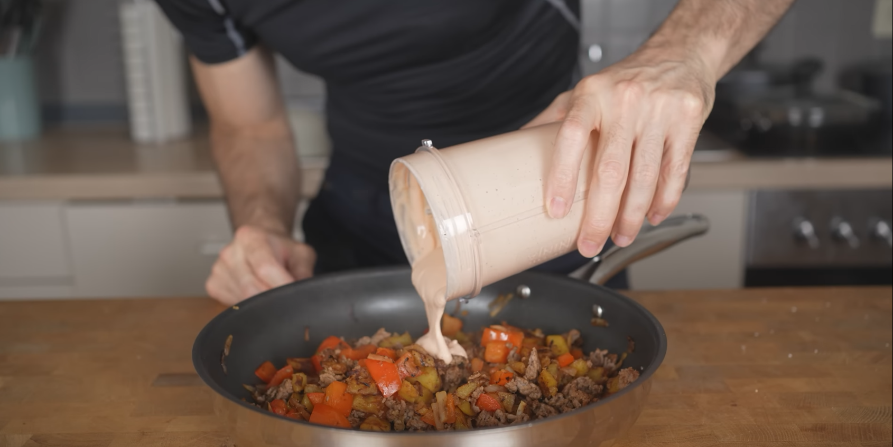

Beef Bowl
Felu - Fit by cooking

Description
This is a low calorie, high protein recipe for a beef bowl. It is created by Felu - Fit by cooking and used for this assignment.
Ingredients
Bowl
- ground beef 180g
- potatoes 250g
- red bell pepper 150g
- onion 50g
- salt, pepper
- 1/4 tsp each garlic powder, chili powder
Sauce
- cottage cheese 100g
- tomato sauce 50g
- evaporated milk 50g
- salt, pepper
- 1/2 tsp oregano
Steps
- Peel potatoes and then cut them into cubes
- Put the potatoes in a microwave safe container and microwave for 5 minutes at 600W
- Cut red bell pepper nd onion into smaller pieces
- Put all sauce ingredients into a blender and mix for 60 seconds
- Heat up a pan to medium heat and add 4g of oil
- Fry the potatoes for 5 minutes until crispy
- Add a bit more oil and then the vegetables
- Keep frying for another 3-4 minutes
- Add another bit more oil and add in the beef
- Spread the beef so as much as possible gets in contact with the pan
- Add salt, pepper, garlic powder, and chili powder
- After 1 minute mix everything and keep frying for another minute
- Remove the pan from the heat and add sauce on top
- Mix everything once again and done!
Home